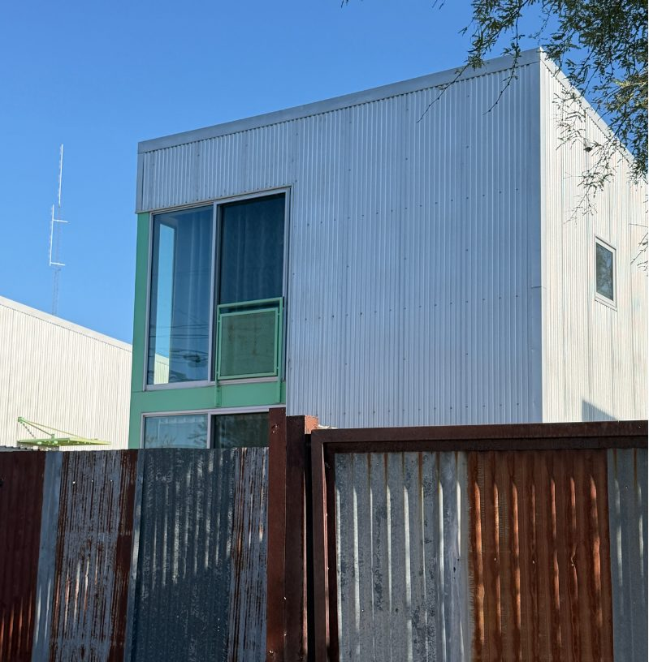

Sustainability

Building performance and Net Zero strategy
How buildings perform in use, and how to close the gap between certification and experience.
- Recreation center utilization studySenior capstone
- Net Zero retrofit: Barrio Metalico, TucsonPage in progress